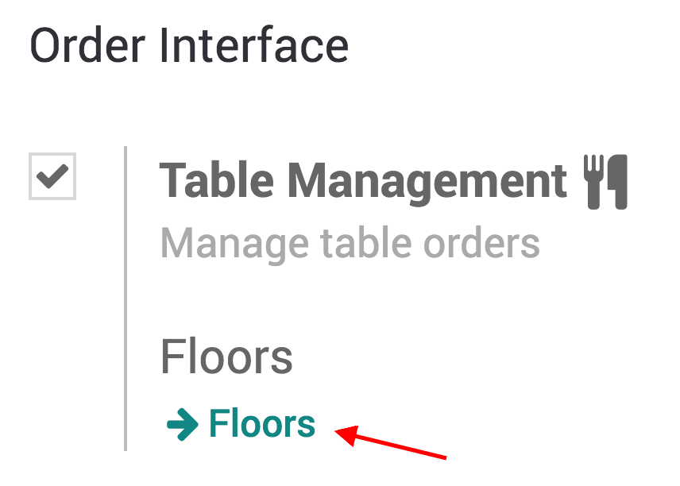
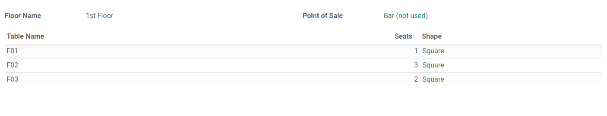
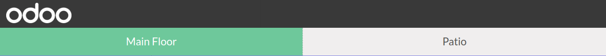
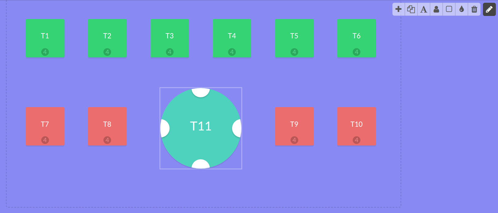
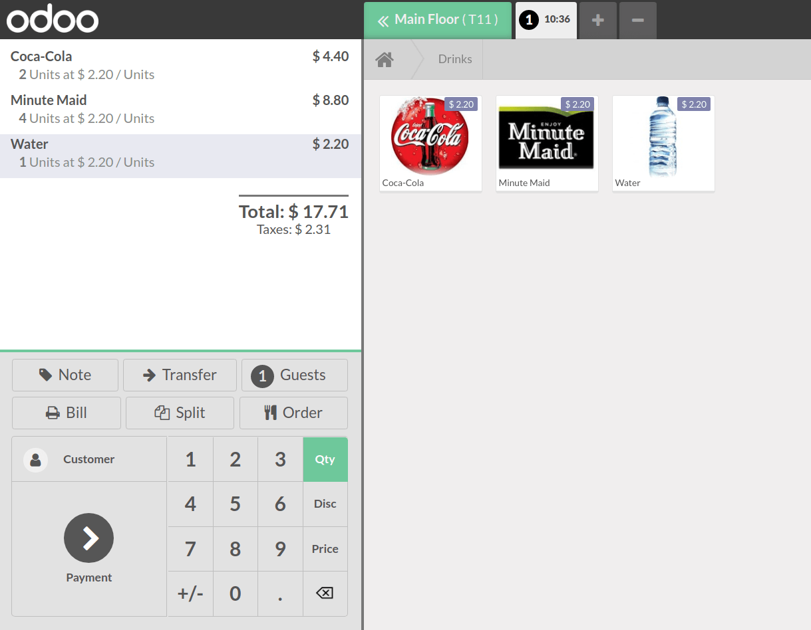
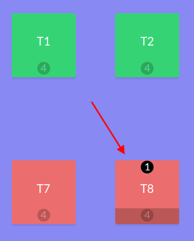
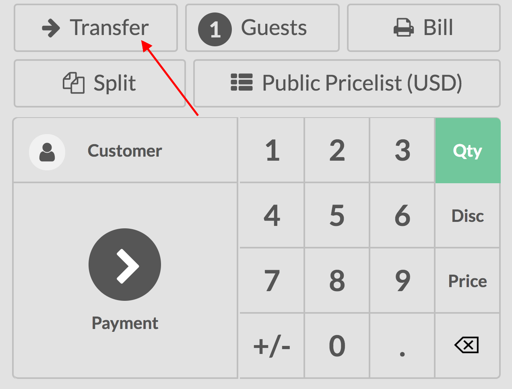
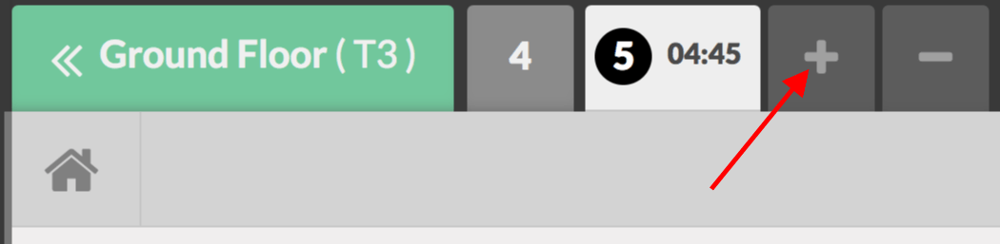

Floors and tables management¶
Add a floor¶
Once your Point of Sale has been configured, select Table Management under . Then, click on Floors to create and name your floor and tables.
 Note
Don’t forget to link your floor to your point of sale.
Add tables¶
To add tables, you can also open your PoS interface to see your floor(s).
Then, click on Edit Mode (pencil icon on the upper right corner) to be allowed to create, move, modify tables, etc.
Note
To make your table easier to be found, you can rename them, change their shape, size or even color. It is also possible to add the maximum number of sits the table can have.
Register your table(s) orders¶
To register an order, click on the respective table. By doing so, you are taken to your main interface.
Transfer customer(s)¶
If your customers want to move to another table after they already ordered, use the transfer button. This way, the order is also moved to the new table.
To do so, select the table your customer is currently on.
Now, click on the transfer button and select the table to which you are transferring your customer.
Register an additional order¶
When registering an order, use the + button to simultaneously proceed to another one.
Then, you can shift between your orders and process the payment when needed.
Tip
The - button allows you to remove the order you are currently on.